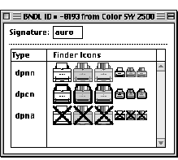

|
|
This Technote, originally written in February 1997, describes how a printer vendor might add desktop printing support in their printer driver. Support for third-party desktop printing has been added to Mac OS 8.5 with specification changes, so we encourage you to read the revisions in this updated Technote, and to try adding desktop printing support to your printer driver.
Updated: [Aug 10 1998]
|
With the introduction of System 6 and MultiFinder in 1989, Apple
introduced background printing. For the first time, a user
could regain control of the Macintosh almost immediately
after printing a document, while the printer driver
processed the document in the background. Classic background
printing has been far more robust than anyone might have
imagined, and it's still the basis of much of today's
printing technology, including desktop printing.
Unfortunately for developers interested in supporting
desktop printing, the interfaces to background printing have
remained largely undocumented.
In 1994, the desktop printing architecture was introduced
with the LaserWriter 8.3 and the StyleWriter 1200 driver. From
its initial release to the present, desktop printing has
existed as a collection of extensions and invisible
applications. While this has not created a clear and simple
picture for developers interested in supporting desktop
printing, this technology shows every sign of thriving for a
long time to come, so understanding its architecture is more
vital than ever.
While the complete story is far from written, and things
will certainly change again with the introduction of
Mac OS X, this article will cover background printing for
all pre-Mac OS X versions of the Mac OS. This includes the
significant changes that make Desktop Printing
accessible to third-party developers. If you currently
have a printer driver, this updated article describes
everything you need to add support for desktop printing.
Classic Background Printing
In early background printing, printer
drivers would save each page as a QuickDraw picture in the
data fork of a temporary file (a spool file) in a special
folder (the Spool Folder) within the System Folder. There
was also information stored in the resource fork describing
the page format, document name, and other job information,
as well as offsets to the beginning of the data for each
page. A special application (Backgrounder) launched by
MultiFinder at startup time (in System 7, Backgrounder was
incorporated into Finder) would see the document created by
the printer driver and would then launch PrintMonitor, which
would run in the background, feeding the spool file to the
printer driver.
PrintMonitor performs its magic by calling the printer
driver in much the same way as an application would, except
rather than your driver's 'PDEF' 0 resource getting called,
its 'PDEF' 126 resource--which has the same format
as the 'PDEF' 0 resource--is called. A special
PrGeneral call is sent just after PrOpen has been called
(before PrOpenDoc has been called) to provide the printer
driver with the pointers to notification functions it will
need to call. PrintMonitor then prints each page by
replaying the stored page data to the driver. This method of
background printing is still used by the Printing Manager
today in two cases: when desktop printing isn't installed
(or has been disabled) and when the Finder isn't running
(usually because At Ease is running instead).
Getting to know classic background printing means learning the structure of its spool file. The resource
fork of the spool file contains the following resources
(note that all structures mentioned in this document have
68k alignment):
- 'PREC' 3 -- the print record
- 'alis' -8192 -- an alias to the driver that
created the spool file
- 'ics#' 131 -- the small icon to display for the
spool file in the PrintMonitor window
- 'PREC' 124 -- the printer name
- 'PREC' 126 -- the job information
typedef {
short version; // always 1
short flags; // always 0
short numPages; // total number of pages in the spool file
short numCopies; // total number of copies for the spool file
OSType creator; // the creator type of the driver used to
// create the spool file
Str31 appName; // the application name used to print the
// spool file
} PREC126Record, *PREC126Ptr, **PREC126Handle;
|
- 'STR ' -8192 -- the filename of the printer
driver
- 'STR ' -8189 -- the document name [always padded
to 80 bytes]
The data fork of the spool file with a SpoolFileHeader structure, followed by the pages.
typedef struct {
short version; // should always be 1
long fileLen; // length of file including spool file header
long fileFlags; // should always be 0
short numPages; // total number of pages in the spool file
TPrint printRecord; // used only if PREC 3 can't be read
} SpoolFileHeader, *SpoolFileHeaderPtr, **SpoolFileHeaderHandle;
typedef struct {
long pictFlags; // should always be 0
Picture thePict; // variable length
long pageOffset; // offset to the beginning of this page's
// PICT
} SpoolPage;
|
The spool file is created by the driver in the Spool Folder or
PrintMonitor Documents folder within the System Folder (or in the current
default desktop printer folder if Mac OS 8 desktop printing is active--
you can find the correct folder with FindFolder and the
kPrintMonitorDocsFolderType selector). Spool files that are
being written have a type of '?job' and a creator of 'prmt'.
Once the file is completely written, the driver changes the
type to 'pjob'. When the version of Desktop Printing that
supports third-party drivers is available, your driver also
needs to send an Apple event to the Finder telling it that a
new spool file was created (more on this below).
When PrintMonitor (or Desktop PrintMonitor) prints a job,
it calls the driver's PrOpen routine and then calls
PrGeneral with the structure shown below (see the
"DesktopPrinting.h" header file for specifics). PrintMonitor
then calls PrOpenDoc with a pIdleProc that the driver needs
to call periodically. PrOpenPage and PrClosePage will get
called for each page of the document, and the page will be
printed to the driver.
// Notification Procs
typedef pascal void (*DTPAsyncErrorNotificationProcPtr) (StringHandle string);
typedef pascal void (*DTPEndNotificationProcPtr) ();
typedef pascal Boolean (*DTPInForegroundProcPtr) ();
typedef pascal void (*DTPStatusMessageProcPtr) (StringHandle string);
// PrGeneral call that PrintMonitor/Desktop PrintMonitor
// use to set up the notification process
#define kPrintMonitorPrGeneral = -3;
// TPrintMonitorPrintingData:
// for classic background printing and desktop printing
// that does not support third-party drivers
typedef struct {
short iOpCode; // kPrintMonitorPrGeneral
short iError;
long iReserved; // 0 - classic PrintMonitor is running
THPrint hPrint;
short noProcs; // number of notification procs
long iReserved2;
DTPAsyncErrorNotificationUPP
pAsyncNotificationProc; // UPP to put up a notification
DTPEndNotificationUPP
pAsyncEndnotifyProc; // UPP to take down
// the notification
DTPInForegroundUPP
pDTPInForegroundProc; // UPP to check if PrintMonitor is
// in foreground
} TPrintMonitorPrintingData;
// TDesktopPrintMonitorPrintingData:
// for desktop printing that supports third-party print drivers
typedef struct {
short iOpCode; // kPrintMonitorPrGeneral
short iError;
long iReserved; // 1 - Desktop PrintMonitor is running
THPrint hPrint;
short noProcs; // number of notification procs
long iReserved2;
DTPAsyncErrorNotificationUPP
pAsyncNotificationProc; // UPP to put up a notification
DTPEndNotificationUPP
pAsyncEndnotifyProc; // UPP to take down the notification
DTPInForegroundUPP
pInForegroundProc; // UPP to check if desktop printing is
// in foreground
DTPStatusMessageUPP
pStatusMessageProc; // UPP to update the printing status
// message in the desktop printer window
} TDesktopPrintMonitorPrintingData;
|
When printing with background printing, both PrintMonitor
and Desktop PrintMonitor will put a DialogPtr into the
low-memory global ApplScratch just before calling PrOpenDoc.
The driver should put status messages into the first item in
that dialog using GetDialogItem and SetDialogItemText.
If the PrGeneral call says that printing is occurring
from Desktop PrintMonitor (which is a faceless background
application), no dialogs or alerts should be displayed. The
one exception is that Desktop PrintMonitor patches StopAlert
and ParamText. If you call ParamText and then StopAlert, the
Finder will display an alert for you with the text you've
set. However, the filter proc passed into StopAlert will not
be called.
A printer driver can provide the user the options of putting
a job on hold, stopping the print queue, trying to print again, or canceling the job. After user selects an option in the alert,
the printer driver should set the print manager error (SetPrError)
to one of the following error codes that corresponds to user selection:
//
// desktop printing error codes
//
#define kDTPHoldJobErr -4200
#define kDTPStopQueueErr -4201
#define kDTPTryAgainErr -4202
#define kDTPAbortJobErr 128
|
Desktop PrintMonitor will then put the job on hold, stop the print queue,
try to print the job again, or cancel the job accordingly.
Back to top
Desktop Printing Today
Desktop printing was introduced with the LaserWriter 8.3
and the StyleWriter 1200 printer drivers, and it uses much
the same approach as classic background printing. Currently,
desktop printing only supports Apple print drivers, but the
additions described in this section are things you will need
to incorporate into your drivers so they will work with
desktop printing in the future.
The additional resources a driver needs to add to support
desktop printing are the icons for the desktop printers. As
a driver developer you'll need to supply a full 'BNDL'
resource with your driver's creator. Beyond the types and
icons you've probably already got in your driver (for the
driver itself and any preferences file), you'll need to add
icons for the types 'dpnn', 'dpcn', and 'dpna', which
correspond to a "normal" desktop printer, a default desktop
printer (with the heavy line around it), and an inactive (or
unavailable) desktop printer. As an example, the bundle from
the Color StyleWriter 2500 is shown below. LaserWriter 8 has
a slightly different scheme for setting the icons for
desktop printers; it retrieves them from the
PostScript printer description (PPD) file for a given
printer.

Figure 1.The StyleWriter 2500 bundle and icons
When an Apple driver creates a spool file for desktop
printing, it places the file in the same folder used by
classic background printing. The Desktop Printing Extension
will take care of moving the file to the desktop printer and
beginning the process of actually printing the document. When
desktop printing is active, the following resources are added
to the spool file:
- 'PINX' -8200 -- the page index resource
- 'jobi' 1 -- the print job information
// PINX -8200 (page index resource)
typedef struct {
short count; // number of elements in the pageOffset array
long pageOffset[1]; // the offset from the beginning of the file
// to the page record
// e.g., it would be sizeof(SpoolFileHeader)
// for the first page.
} SpoolPageIndex, *SpoolPageIndexPtr, **SpoolPageIndexHandle;
// jobi 1 (DTP print job information resource)
// print priorities
#define kDTPPrintJobUrgent 0x00000001
#define kDTPPrintJobAtTime 0x00000002
#define kDTPPrintJobNormal 0x00000003
#define kDTPPrintJobHolding 0x00001003
typedef struct
{
short firstPageToPrint; // first page in the spool file to print
short priority; // print priority (e.g., kDTPPrintJobNormal)
short numCopies; // total number of copies
short numPages; // total number of pages in the spool file
unsigned long timeToPrint; // time to print (in seconds) when
// priority is kDTPPrintJobAtTime
Str31 documentName; // name of the document
Str31 applicationName; // name of the application that's used
// to create this spool file
Str32 printerName; // name of the target printer
// (should be the same as what's in PREC 124)
} DTPPrintJobInfo, *DTPPrintJobInfoPtr, **DTPPrintJobInfoHandle;
|
Another addition is a new way to change the default
desktop printer. An application or driver can send an Apple
event to the Finder as shown below. (Note that
SendAEToFinder just sends the event to the Finder--see "DTPSample.c" for info.)
#define kDTPSignature 'dtpx'
#define aeDTPSetDefaultEventType 'pfsd'
// event data
typedef struct {
OSType dtpSignature; // kDTPSignature
OSType dtpEventType; // aeDTPSetDefaultEventType or aeDTPSyncEventType
FSSpec dtpSpec; // the file spec of the target dtp
} DTPAppleEventData;
OSErr SetDefaultDTP(const FSSpec* dtpSpec) {
OSErr err;
DTPAppleEventData myEvent;
myEvent.dtpsignature = kDTPSignature;
myEvent.dtpEventType = aeDTPSetDefaultEventType;
BlockMove((Ptr)dtpSpec, (Ptr)&myEvent.dtpSpec, sizeof(FSSpec));
err = SendAEToFinder((Ptr)&myEvent, sizeof(DTPAppleEventData));
return err;
}
|
Back to top
Desktop Printing Tomorrow
With the introduction of Mac OS 8, desktop printing will
no longer be a separate extension. It will be integrated
into the Finder and therefore available in most cases. A
user can still disable desktop printing by disabling the
Desktop PrintMonitor and Desktop Printer Spooler in
Extensions Manager, though. In Mac OS 8.5, changes have been
made to make it possible for third
parties to integrate support.
Desktop printing installs a Gestalt selector to
tell you
if third-party drivers can be supported. If desktop printing
is available, but this selector does not report that
third-party drivers are supported by desktop printing, you
will need to use the methods described in the "Classic
Background Printing" section above.
//
// Desktop Printing Feature Gestalt
// Use this gestalt to check if third-party printer driver support is available
//
enum { gestaltDTPFeatures = 'dtpf' };
#define kDTPThirdPartySupported 0x00000004 // mask for checking if third-
// party drivers are supported
Boolean ThirdPartyDriverSupported(void) {
long response;
Boolean result = false;
OSErr err = Gestalt(gestaltDTPFeatures, &response);
if (err == noErr) {
result = !!(response & kDTPThirdPartySupported);
}
return(result);
}
|
When non-Apple drivers are supported by desktop printing,
your driver needs to write your spool files directly to the
desktop printer folder with the type of '?job'. When you are
done spooling, you need to change the file's type to 'pjob'.
The driver can determine the current default desktop printer
folder, and many other things, by calling the Gestalt
routine with the desktop printing extension selector. The
selector is 'dtpx', and the information is returned to you
in a handle. When you're done with the handle, do not call
DisposeHandle on theDTPList and the GestaltDTPInfoHdle.
//
// Desktop Printer Info Gestalt
// Use this gestalt to gather information for all of the
// active desktop printers
//
enum { gestaltDTPInfo = 'dtpx' };
enum
{
// version 2.0f0 (for Mac OS 8.0, 8.1 and 7.x)
kDTPGestaltStructVersion2 = 0x02008000,
// version 3.0 (for Mac OS 8.5)
kDTPGestaltStructVersion3 = 0x03000000
};
// DTPInfo
typedef struct {
short vRefNum; // vRefNum of the DTP folder
long dirID; // directory ID of the DTP folder
Str31 dtpName; // name of the DTP folder
OSType driverType; // creator type of the print driver for this DTP
Boolean current; // is this DTP currently the default printer?
Str32 printerName; // name of the actual printer on the net
// (only for LaserWriter 8 dtps)
Str32 zoneName; // zone where this printer resides
// (only for LaserWriter 8 dtps)
} DTPInfo;
// data associated with the desktop printer info gestalt
typedef struct {
long version; // kDTPGestaltStructVersion3 or kDTPGestaltStructVersion2
short numDTPs; // number of the active dtps
Handle theDTPList; // handle to a list of DTPInfo for the active dtps
Handle theDTPDriverList; // handle to a list of print driver file specs for
// each of the active dtp in theDTPList
long reserved;
} GestaltDTPInfo, **GestaltDTPInfoHdle;
|
When you're done writing the spool file, you need to send
an Apple event to tell the Finder about the new spool file
(see SyncDTP function in the file "DTPSample.c").
There are also added calls for this version of desktop
printing. Specifically, there are three new PrGeneral
selectors that a driver needs to support:
kDTPIsSamePrinterInfo, kDTPGetPrinterInfo, and
kDTPSetDefaultPrinterInfo. These selectors enable the desktop
printing extension to decide which of the driver's desktop
printers is the current default printer, to determine
whether it needs to create a new desktop printer, and to
inform the driver that a desktop printer has been selected
as the default. The structures you'll need to use to support
these selectors are shown below:
// PrGeneral opcodes
enum
{
kDTPGetPrinterInfo = 23,
kDTPIsSamePrinterInfo = 24,
kDTPSetDefaultPrinterInfo = 25
};
// DTP printer types (address types)
enum
{
kDTPUnknownPrinterType = -1, // unknown address type
kDTPSerialPrinterType = 0, // serial printer
kDTPAppleTalkPrinterType = 1, // AppleTalk printer
kDTPTCPIPPrinterType = 2, // TCP/IP printer
kDTPSCSIPrinterType = 3, // SCSI printer
kDTPUSBPrinterType = 4 // USB printer
};
// serial ports
enum
{
kDTPUnknownPort = -1, // for drivers that support serial connection by the
// Comm Toolbox other than modem and printer port
kDTPPrinterPort = 0, // printer port
kDTPModemPort = 1 // modem port
};
// serial printer address
typedef struct
{
short port; // kDTPPrinterPort, kDTPModemPort or kDTPUnknownPort
Str31 portName; // name of the port specified in the port field
} DTPSerialAddress;
// AppleTalk printer address
typedef struct
{
Str32 nbpName;
Str32 nbpZone;
Str32 nbpType;
} DTPAppleTalkAddress;
// TCP/IP printer address
typedef struct
{
Str255 TCPIPAddress;
Str255 queueName;
} DTPTCPIPAddress;
// SCSI printer address
typedef struct
{
short id; // SCSI id
} DTPSCSIAddress;
// USB printer address
typedef struct
{
Str255 name; // printer name
} DTPUSBAddress;
// data passed into the PrGeneral calls
typedef struct
{
Str31 dtpDefaultName; // default name for the desktop printer.
short printerType; // kDTPSerialPrinterType, kDTPAppleTalkPrinterType,
// kDTPTCPIPPrinterType, kDTPSCSIPrinterType,
// kDTPUSBPrinterType or kDTPUnknownPrinterType
// Info specific to each type of printers
union
{
DTPSerialAddress serial;
DTPAppleTalkAddress appleTalk;
DTPTCPIPAddress tcpip;
DTPSCSIAddress scsi;
DTPUSBAddress usb;
} u;
// optional driver-specific information can be appended here
} DTPPrinterInfo, **DTPPrinterInfoHandle;
typedef struct {
short iOpCode; // kDTPGetPrinterInfo, kDTPIsSamePrinterInfo
// or kDTPSetDefaultPrinterInfo
short iError;
long iCommand;
DTPPrinterInfoHandle printerInfo;
} TDTPPrGeneralData;
|
In order for the Finder to recognize whether or not your device supports desktop printing,
you need to add the 'dtpi' resource to the printer driver's resource fork.
//
// desktop printer info resource
//
#define kDTPInfoResType 'dtpi'
#define kDTPInfoResID -8192
// connection types supported
#define kDTPUnknownConnection 0x00000000 // unknown connection type
#define kDTPSerialConnection 0x00000001 // serial connection
#define kDTPSCSIConnection 0x00000002 // SCSI connection
#define kDTPAppleTalkConnection 0x00000004 // AppleTalk connection
#define kDTPTCPIPConnection 0x00000008 // TCP/IP connection
#define kDTPUSBConnection 0x00000010 // USB connection
// dtp extra features supported
#define kDTPBasicFeatures 0x00000000 // only basic dtp funtionalities
// are supported
typedef struct
{
long features; // kDTPBasicFeatures (only basic features are supported
// for MacOS 8.5)
long connectionType; // can be kDTPUnknownConnection or any combination
// of kDTPSerialConnection, kDTPSCSIConnection,
// kDTPAppleTalkConnection, kDTPTCPIPConnection,
// and kDTPUSBConnection
} DTPInfoResource;
|
When your driver is selected in the Chooser, desktop
printing will call your driver via a series of PrGeneral
calls. First, you'll get called with the kIsSamePrinterInfo
selector for each of the desktop printers created by your
driver in order to determine which is the currently selected
printer. Your driver responds by filling in the iError field
of the TPrinterInfoPrGeneralData record. If the printer that
your driver thinks is current matches the information passed
in with the kIsSamePrinterInfo selector, the driver responds
by setting the iError field to noErr. If it's not a match,
the driver sets the iError field to -1.
If the printer selected in the Chooser is not among the
desktop printers owned by your driver, desktop printing will
create a new desktop printer and call PrGeneral with the
kGetPrinterInfo selector to get the information for the
selected printer. At this point, your driver should resize
the printerInfo handle and fill in the printer information.
You need to fill in the dtpDefaultName field with the name
you'd like to see assigned to the newly created desktop printer. Note also
that your driver can append as much (or as little) extra
printer information as you'd like. Once you've returned the
information, the desktop printing extension will save this
information into the desktop printer.
If a user selects one of your desktop printers via the
Set Default Printer menu item in the Printing menu (which
appears in the Finder when you've clicked on a desktop
printer), your driver will get a PrGeneral call with the
kSetDefaultPrinterInfo selector. When you receive this call,
you should change any internal settings your driver
maintains so that the printer pointed to by the
DTPPrinterInfo handle you received is now the currently selected
printer for your driver.
Back to top
The Future Is Now
If you've currently got a driver that supports classic
background printing, your best bet for future compatibility
is to add support for desktop printing. However, if you're
just starting to tackle background printing now, and while you
could implement support for Mac OS 8 desktop printing only,
we strongly recommend that you support the current desktop
printing architecture and classic background printing as
well. That way, your users will have a more consistent
experience when printing, regardless of which version of the
Mac OS they're running.
Back to top
Downloadables
Back to top
|